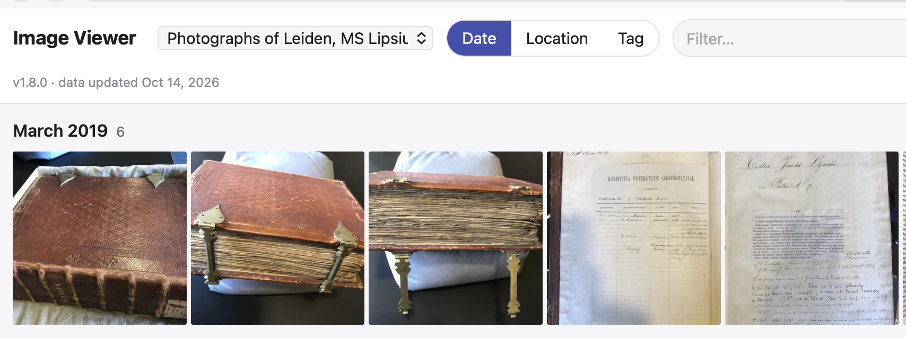
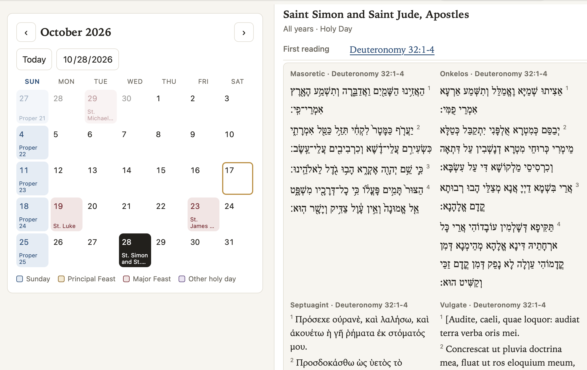

Hobby apps
Agentic coding with Claude is amazing. That’s not news: I seem to run across multiple stories every day about businesses or entire industries that are being turned upside down by agentic coding. (Have you downloaded artcraft yet?)

But agentic coding is a game changer for hobby projects, too. One category of small projects I’ve played with this week revolve around replacing an existing professional app with a Claude-coded app that lets me add my own annotations to data. I don’t want a complex application or cloud-managed “solution” to browse media files like images and audio files in my local file system. In addition to the basic functionality I actually use in those kinds of apps (panning and zooming images, playing audio tracks), I want to annotate images or audio data in simple delimited-text files. Like an image viewer that lets me view image files and pulls in cataloging data if I’ve dropped a delimited-text file in the file tree, but displays the image without complaining if it’s not documented. Or an audio player that works similarly. The first one took Claude and me a good part of a morning, as I felt my way through the set up and definitions for the project. The second one was what I call “a breakfast project”: a project that I start with my first cup of coffee, and (thanks to Claude) has reached a releasable version before I finish my second cup.
Or how about specialized readers? A number of web sites support reading texts following the calendar of the Revised Common Lectionary, but I’d like to automate bringing in my own content. That was a breakfast project.

Or what if you wanted to do something similar with the weekly parshah and haftarah readings in the Hebrew calendar? That was this morning’s breakfast project.
Personalizing content simply
Each of these apps is implemented in a single, self-contained HTML file that can be hosted on a web server or opened in a web browser from a local copy. The simplicity of a single file in the universal platform of the web browser is appealing, but their real motivation was to personalize the data they work with. Plain-text files with your choice of data keyed to unique identifiers (perhaps file name for an audio file, or a CTS URN for a passage of text) suffice. If you’ve used Obsidian, you already appreciate the power of an app that lets you work with plain text in simple formats. A breakfast with Claude is enough to fold image browsing, audio playback or complicated calendrical lookups into the mix.
I’ve added a page to this site with links to these and any further hobby projects I add.
Citation
@online{smith2026,
author = {Smith, Neel},
title = {Personalizing Generic Apps Has Never Been Easier},
date = {2026-10-17},
url = {https://neelsmith.github.io/posts/2025-10-16-claude/},
langid = {en}
}